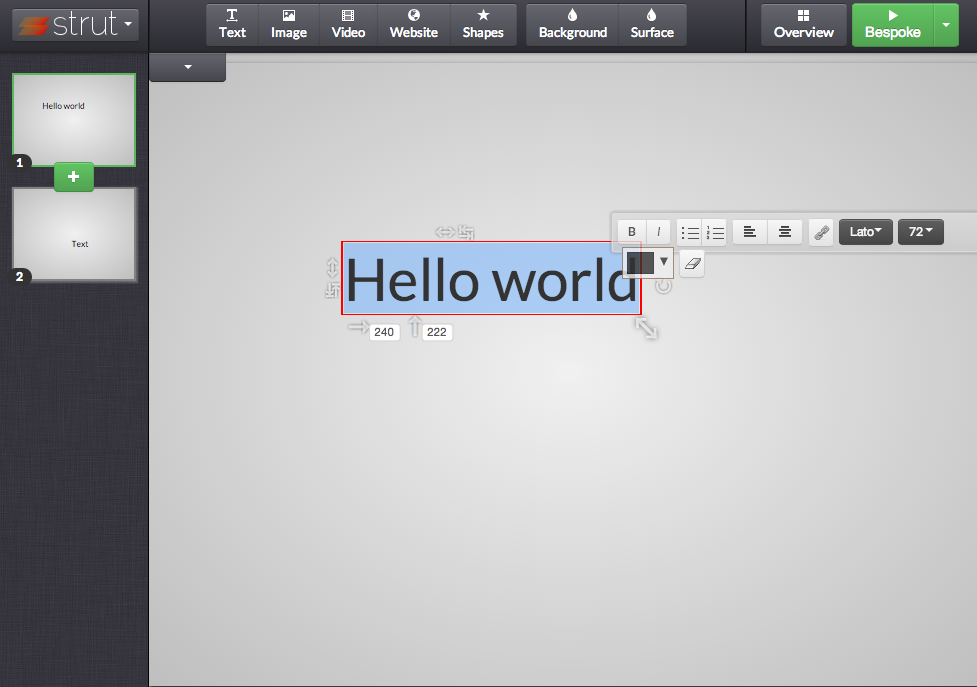

Mark Dalgleish
Bespoke.js
“A Bespoke Ecosystem”
On front-end modularity
Why Bespoke?
Bespoke.js is a blank canvas
Most frameworks are
busy adding features
Bespoke features over time:
- Manages deck state
- Handles keyboard input
- Handles touch input
- Adds CSS classes
- Allows plugins
Plugin first design
bespoke.from('#presentation', [
classes(),
keys(),
touch(),
bullets('li, .bullet'),
etc…
]);
Every plugin is a separate module
var bespoke = require('bespoke'),
classes = require('bespoke-classes'),
keys = require('bespoke-keys'),
touch = require('bespoke-touch'),
bullets = require('bespoke-bullets');
Plugins are just functions
module.exports = function(options) {
return function(deck) {
deck.next();
deck.prev();
// etc…
};
};
The API is inherently modular
- Using it teaches you how it works
- No black box, small approachable modules
- Users are encouraged to view source
Authoring experience?
Perfect for fighting
“fear of the imperfect solution”
Plugins provide a safe space for your crazy experiments
Managing versions is simplified
Great for maintenance mode
- Bugs are minimised
- Mistaken bug reports are also minimised
- Bug reports tend to go to the right place
- You get to keep your sanity
“I just want some boilerplate”
Almost everyone
Competing concerns
Modularity vs Ease of Use
My solution? Yeoman
generator-bespoke
$ npm install -g generator-bespoke
$ yo bespoke
index.jade
article
section
h1 Slide 1
section
h1 Slide 2
main.js
bespoke.from('article', [
// plugins…
]);
- Gulp build system (previously Grunt)
- Preview server with LiveReload
- Style sheet to get started
- GitHub Pages deployment task
Modularity paid off
- Generator is boilerplate + module selector
- Wouldn’t work if Bespoke was a black box
- You can ignore the generator if you’re too cool
Yeoman jump-started presentations
What about plugins?
generator-bespokeplugin
It worked
My favourite plugin:
bespoke-camera
By Matteo Collina
Add camera feed to slide
Just a simple data attribute
<section data-camera="fullscreen">
Lots of Bespoke presentations
- Many use the “starter” styles
- Many copy other custom styles
Something’s missing…
“The only thing missing to make Bespoke.js perfect is theming”
@ryanseddon
The problem?
“Themes” are more than CSS
- Themes need to be composed of other plugins
- The plugin API was getting in the way
v0.x API
bespoke.from('#deck', {
keys: true,
touch: true,
bullets: 'li, .bullet'
});
Plugins sit on global ‘bespoke’
// bespoke.js
var bespoke = …;
// bespoke-keys.js
bespoke.plugins.keys = function(deck, options) {
…
};
Flat dependency graph
{host}
|- {plugin}
|- {plugin}
|- {plugin}
|- {plugin}
jQuery works like this
var $ = …;
// Plugins piggy back onto a host object
$.prototype.plugin = function() {
this; // collection;
};
Grunt works like this:
grunt.loadNpmModules('grunt-jade');
grunt.initConfig({
jade: {
src: 'src/*.jade',
…
}
});
The problem with these APIs?
They're not composable
Grunt switched paradigms
- Originally it included a suite of “plugins”
- Modules instead of a large black box
- The API didn’t change with it…
Why Gulp seems easier
- Modular from the start
- The API fits the paradigm
var jade = require('gulp-jade');
return gulp.src('src/*.jade')
// Explicitly pass plugin
// reference to stream:
.pipe(jade())
.pipe(gulp.dest('dist'));
Bespoke had the same problem
Time to change the API
My answer?

Browserify
+
brfs
+
insert-css
All by Substack
Browserify
Require in the browser
var bespoke = require('bespoke');
Users explicitly require all plugins
No more global objects
var progress = require('bespoke-progress');
How does Browserify help
with theme styles?
Transforms
brfs
Transform to inline file contents
brfs compiles this:
var css = fs.readFileSync(__dirname +
'/theme.css', 'utf8');
Into this:
var css = '.bespoke-parent{ …';
insert-css
Inserts a string of CSS to the head
var css = '.bespoke-parent{…';
insertCss(css, { prepend: true });
Writing a theme:
module.exports = function() {
// Prepend styles:
var css = fs.readFileSync(…, 'utf8');
insertCss(css, { prepend: true });
// Include plugins:
return function(deck) {
classes()(deck);
dir()(deck);
};
};
Plugins can be composed
{host}
|- {plugin}
|- {plugin}
|- {plugin}
|- {plugin}
|- {plugin}
|- {plugin}
Installing a theme
$ npm install bespoke-theme-cube
Using a theme
var cube = require('bespoke-theme-cube');bespoke.from('#deck', [
cube(),
keys(),
touch()
]);
generator-bespoketheme
- Gulp build system
- Browserify + brfs + insert-css
- Stylus, normalize and autoprefixer
- GitHub Pages deployment task for demo
JavaScript centric modules
- Manages DOM nodes
- Inserts style/link/script tags
- Dynamically inserts assets
CSS can’t touch this
Separate your concerns,
not your technologies
- CSS in your JS bundle is okay
- Front-end code on npm is okay too
- Even if it’s just CSS (check out Normalize.css)
The new normal
- HTML templates compiled to JS (old news)
- Brfs / WebPack’s loader system
The future…?
- Web components inserting styles into Shadow DOM
- How the community reacts is yet to be seen…
Don’t build a monolith—
craft an ecosystem
It may surprise you where it leads…
mozdevtools-presentation
By Mozilla’s Angelina Fabbro
Strut.io
Visual slide editor for Bespoke & Impress

Just for WDCNZ…
Bespoke.js v1.0
Join the ecosystem:
$ npm install -g generator-bespoke
$ yo bespoke